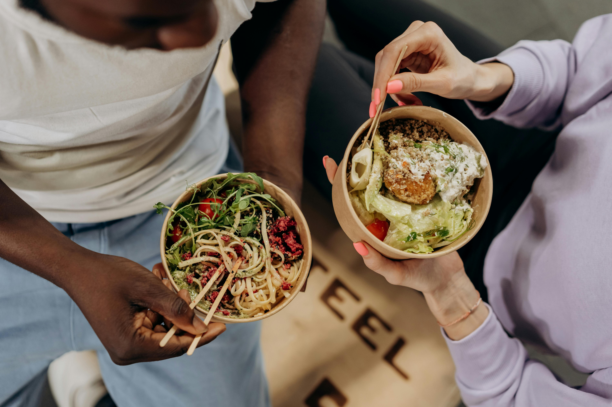

Health & Wellness
At Anthropic, we believe that supporting our employees is crucial
to our collective success and
wellbeing. That's why we offer a range of benefits to best support you and your family, now and
in
the future.
Comprehensive health, dental, and vision insurance for you and your dependents
Inclusive fertility benefits via Carrot Fertility
22 weeks of paid parental leave
Flexible paid time off and absence policies
Generous mental health support for you and your dependents
Compensation & Support
Our goal is to foster an environment where you can thrive
professionally while feeling confident that you and your loved ones are taken care of.
Competitive salary and equity packages
Optional equity donation matching at a 1:1 ratio, up to 25% of your equity grant
Robust retirement plans and salary sacrifice programs with market competitive matching
Life and income protection plans
Additional Benefits
monthly flexible wellness and time saver stipend
Commuter benefits
Annual education stipend
Home office stipends
Relocation support for those moving for Anthropic
Daily meals and snacks in the office